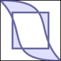
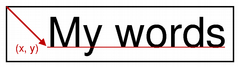

| Home · All Classes · Main Classes · Annotated · Grouped Classes · Functions |
The QPainterPath class provides a container for painting operations, enabling graphical shapes to be constructed and reused. More...
#include <QPainterPath>
Part of the QtGui module.
The QPainterPath class provides a container for painting operations, enabling graphical shapes to be constructed and reused.
A painter path is an object composed of a number of graphical building blocks, such as rectangles, ellipses, lines, and curves. A painter path can be used for filling, outlining, and clipping. The main advantage of painter paths over normal drawing operations is that complex shapes only need to be created once, but they can be drawn many times using only calls to QPainter::drawPath().
Building blocks can be joined in closed subpaths, such as a rectangle or an ellipse, or they can exist independently as unclosed subpaths. Note that unclosed paths will not be filled.
Below is a code snippet that shows how a path can be used. The painter in this case has a pen width of 3 and a light blue brush. The painter path is initially empty when constructed. We first add a rectangle, which becomes a closed subpath. We then add two bezier curves, and finally draw the entire path.
 | QPainterPath path;
path.addRect(20, 20, 60, 60);
path.moveTo(0, 0);
path.cubicTo(99, 0, 50, 50, 99, 99);
path.cubicTo(0, 99, 50, 50, 0, 0);
painter.drawPath(path);
|
See also QPainter, QRegion, QPolygonF, QRectF, and QPointF.
Constructs a new empty QPainterPath.
Creates a new painter path with startPoint as starting poing
Creates a new painter path that is a copy of the other painter path.
Destroys the painter path.
Creates an ellipse within the bounding rectangle specified by boundingRect and adds it to the painter path.
If the current subpath is closed, a new subpath is started. The ellipse is composed of a clockwise curve, starting and finishing at zero degrees (the 3 o'clock position).
This is an overloaded member function, provided for convenience. It behaves essentially like the above function.
Creates an ellipse within a bounding rectangle defined by its top-left corner at (x, y), width and height, and adds it to the painter path.
If the current subpath is closed, a new subpath is started. The ellipse is composed of a clockwise curve, starting and finishing at zero degrees (the 3 o'clock position).
Adds the path other to this path.
Adds the polygon to path as a new subpath. Current position after the rect has been added is the last point in polygon.
Adds the rectangle to this path as a closed subpath. The rectangle is added as a clockwise set of lines. The painter path's current position after the rect has been added is at the top-left corner of the rectangle.
This is an overloaded member function, provided for convenience. It behaves essentially like the above function.
Adds a rectangle at position (x, y), with the given width and height. The rectangle is added as a clockwise set of lines. Current position after the rect has been added is (x, y).
Adds the region region to the path. This is done by adding each rectangle in the region as a separate subpath.
Adds the given text to this path as a set of closed subpaths created from the font supplied. The subpaths are positioned so that the left end of the text's baseline lies at the point specified.

See also QPainter::drawText().
This is an overloaded member function, provided for convenience. It behaves essentially like the above function.
Adds the given text to this path as a set of closed subpaths created from the font supplied. The subpaths are positioned so that the left end of the text's baseline lies at the point specified by (x, y).
See also QPainter::drawText().
Creates an arc that occupies the given rectangle, beginning at startAngle and extending sweepLength degrees counter-clockwise. Angles are specified in degrees. Clockwise arcs can be specified using negative angles.
This function connects the current point to the starting point of the arc if they are not already connected.
See also QPainter::drawArc().
This is an overloaded member function, provided for convenience. It behaves essentially like the above function.
The arc's lies within the rectangle given by the point (x, y), width and height, beginning at startAngle and extending sweepLength degrees counter-clockwise. Angles are specified in degrees. Clockwise arcs can be specified using negative angles.
This function connects the current point to the starting point of the arc if they are not already connected.
See also QPainter::drawArc().
Returns the bounding rectangle of this painter path as a rectangle with floating point precision.
This function is costly. You may consider using controlPointRect() instead.
Closes the current subpath. If the subpath does not contain any elements, the function does nothing. A new subpath is automatically begun when the current subpath is closed. The current point of the new path is (0, 0).
Adds the path other to this path by connecting the last element of this to the first element of other.
See also addPath().
Returns true if the point pt is contained by the path; otherwise returns false.
This is an overloaded member function, provided for convenience. It behaves essentially like the above function.
Returns true if the rect rect is inside the path; otherwise returns false.
Returns the rectangle containing the all the points and control points in this path. This rectangle is always at least as large as and will always include the boundingRect().
This function is significantly faster to compute than the exact boundingRect();
Adds a Bezier curve between the current point and endPoint with control points specified by c1, and c2. After the curve is added, the current point is updated to be at the end point of the curve.
This is an overloaded member function, provided for convenience. It behaves essentially like the above function.
Adds a Bezier curve between the current point and the endpoint (endPtx, endPty) with control points specified by (ctrlPt1x, ctrlPt1y) and (ctrlPt2x, ctrlPt2y). After the curve is added, the current point is updated to be at the end point of the curve.
Returns the current position of the path.
Returns the element at the given index in the painter path.
Returns the number of path elements in the painter path.
Returns the fill rule of the painter path. The default fill rule is Qt::OddEvenFill.
See also Qt::FillRule and setFillRule().
Returns true if any point in rect rect is inside the path; otherwise returns false.
Returns true if there are no elements in this path.
Adds a straight line from the current point to the given endPoint. After the line is drawn, the current point is updated to be at the end point of the line.
This is an overloaded member function, provided for convenience. It behaves essentially like the above function.
Draws a line from the current point to the point at (x, y). After the line is drawn, the current point is updated to be at the end point of the line.
Moves the current point to the given point. Moving the current point will also start a new subpath. The previously current path will not be closed implicitly before the new one is started.
This is an overloaded member function, provided for convenience. It behaves essentially like the above function.
Moves the current point to (x, y). Moving the current point will also start a new subpath. The previously current path will not be closed implicitly before the new one is started.
Adds a quadratic Bezier curve between the current point and endPoint with control point specified by c. After the curve is added, the current point is updated to be at the end point of the curve.
This is an overloaded member function, provided for convenience. It behaves essentially like the above function.
Adds a quadratic Bezier curve between the current point and the endpoint (endPtx, endPty) with the control point specified by (ctrlPtx, ctrlPty). After the curve is added, the current point is updated to be at the end point of the curve.
Sets the fill rule of the painter path to fillRule.
See also fillRule().
Returns the painter path as one polygon that can be used for filling. This polygon is created by first converting all subpaths to polygons, then using a rewinding technique to make sure that overlapping subpaths can be filled using the correct fill rule.
The polygon is transformed using the transformation matrix matrix.
Note that rewinding inserts addition lines in the polygon so the outline of the fill polygon does not match the outline of the path.
See also toSubpathPolygons() and toFillPolygons().
Returns the path as a list of polygons. The polygons are transformed using the transformation matrix matrix.
This function differs from toSubpathPolygons() and toFillPolygon() in that it creates one rewinded polygon for all subpaths that have overlapping bounding rectangles.
This function is provided, because it is usually faster to draw several small polygons than to draw one large polygon, even though the total number of points drawn is the same.
See also toSubpathPolygons() and toFillPolygon().
Creates a reversed copy of this path and returns it
Returns the painter path as a list of polygons. One polygon is created for each subpath. The polygons are transformed using the transformation matrix matrix.
Returns true if this painterpath differs from path.
Comparing paths may involve a per element comparison which can be slow for complex paths.
Assigns the other painter path to this painter path.
Returns true if this painterpath is equal to path.
Comparing paths may involve a per element comparison which can be slow for complex paths.
This is an overloaded member function, provided for convenience. It behaves essentially like the above function.
Writes the painter path specified by path to the given stream, and returns a reference to the stream.
See also Format of the QDataStream operators.
This is an overloaded member function, provided for convenience. It behaves essentially like the above function.
Reads a painter path from the given stream into the specified path, and returns a reference to the stream.
See also Format of the QDataStream operators.
| Copyright © 2005 Trolltech | Trademarks | Qt 4.0.0 |